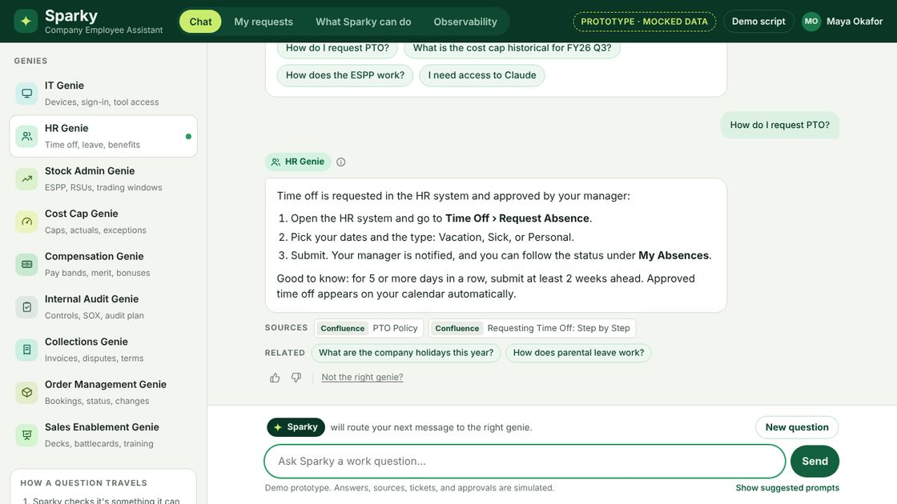

Employee assistant
Sparky
One chat for every "who do I ask?" question. Sparky routes each question to the right team's assistant and always shows where the answer came from.
The production version cut routine support requests by 70%.